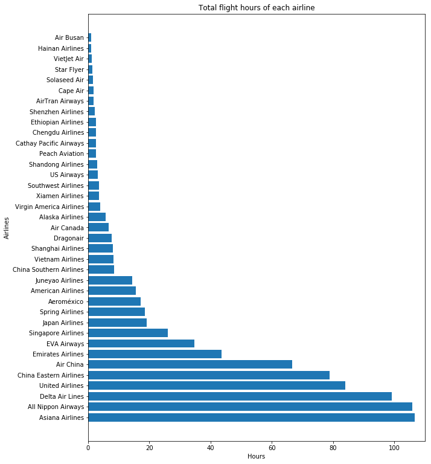
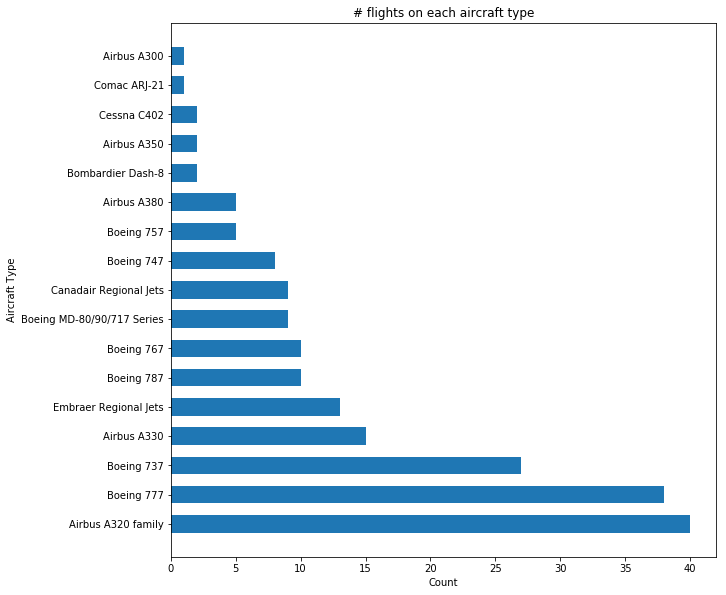
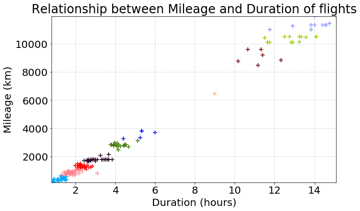

This is created as a part of my coursework.
Produced by Haocong Cheng, Minghao Guo, Qiuyan Guo, Yuerong Hu
I have been recording my flight history since 2014, when I started to have a bit of interest with civil aviation. It took a while for me to find the older flights I’ve taken before 2013, since I’m not old enough at that time to realize the importance of keeping the records. If anyone has suggestions about tools to find out aircraft type / schedule for those old flights, please let me know :) Fortunately, I have included all of my flights I’ve ever taken. Every flight since 2014 has been recorded properly. You can check a concise version of my flight history by Clicking Here.
So far, these records are staying in a spreadsheet, and to be honest, I’m not sure what I can do with them. One great service I found is OpenFlights.org. This is an open source service that can keep your flight history and provide some analysis / visualizations, including a nice route map. Here’s what I’ve got.
Another service I’m using is Flightmemory.com. This also gives some great maps and statistics, but to be honest, I prefer openflights which allows me to import flight data using csv file, which can be transferred easily from my spreadsheet. For Flightmemory, you have to type in everything. I was so boring on one day that I decided to manually input everything in there.

Still, both services are not flexible enough for me to learn something more advanced. For example, the actual carrier (considering the regional carriers as an actual carrier rather than United Express flight) vs the ticketing carrier (considering United Express as United flights. I’m actually struggled to name this thing because it’s not exactly ticketing carrier since there are codeshare flights as well, and I’m only considering the actual carrier. Naming suggestion is welcome). The aircraft type is also quite annoying since the type I kept record is way too specific. It’s not easy to use either service to fulfill the two different levels of details in aircraft types. Therefore, I decided to use this dataset as a final project for my data visualization class using Python.
The first diagram that you might want to see (or I assume you want to see) is still that route map. Therefore, we did one. I know it’s not perfect, but at least it shows something.
We also made an interactive version, but unfortunately with the current technology it’s impossible for us to allow you to interact with it without a server that does all the calculations each time you select on something. If you are curious about hot it looks like, you can click here. Therefore, I have a few quick videos on how it looks like.
You can filter either airlines (using the ticketing carrier I mentioned earlier), city (both departure and arrival), and aircraft type. These three videos shows the filter of each of them.
Airline Filter
City Filter
Aircraft Filter
The filters can also be used together. For example, Delta Air Lines holds a huge number of MD-88 in their home base Atlanta. This video shows all the flights I’ve taken to/from Atlanta on a MD-80/90/717 series with Delta with all three filters.
If you happened to have access to Jupyterhub, you may want to run my notebook within there to play with it. Sadly, it won’t work with any other services like nbviewer, since they are only for static pictures. Click here for source code on GitHub
As I said earlier, airlines and aircrafts are two parts that could be quite different with different detail levels. To compare the differences of these detail levels, we created several graphs. The first set is for airlines.
With ticketing carrier, Delta and United have significantly more flights, which boosted them to the first and second. When excluding those regional flights by United Express and Delta Connections, Air China, All Nippon Airways, and Delta shares the greatest count.
However, it might be a different story in terms of flight durations and mileage for all airlines. For this part, we have two more graphs.

As you can see, Asiana Airlines has the greatest duration and mileage since I had several transpacific flights with them, which isn’t a lot with just flight count.
A similar approach is used for aircrafts, and there are two more graphs regarding flight count.

In both cases, Airbus A320 (family) is dominant, but the effect is more significant in the “midfield” like ERJs and CRJs. By combining the counts of all variations of these regional jets, their count exceeds those jumbo jets like Boeing 747 and Airbus A380.
Again, the similar approach is used on airports and cities (regardless of departure or arrival), and again, we have two more graphs regarding flight count.
Similarly, the dominant ones stayed the same, especially Shanghai since that is my hometown, and Chicago, which is closest to my home in the US. However, since Indianapolis is also an option for me in the US, it took away some trips that could start from Chicago as well. For Shanghai, though, it’s almost guaranteed to depart from one of the two airports for any trip. In the “midfield”, Washington DC, New York (including Newark), and Taipei are having greater counts since there are multiple airports in all these cities with a few flights in each of them.
Our latest graph so far is finding the relationship between duration and mileage, which you would expect a longer flight results a longer duration. However, there are some interesting findings beyond this.

As you can see, the points tend to be on the top right or bottom left, which are very long flights and rather short flights. There aren’t many flights in the middle (around 5000-9000km). This is related to the data itself, which is indeed my flight history. Most of my flights are either domestic / same region (like within East Asia), or they are transpacific. I have barely taken any mid-range flights like from North America to Europe or from East Asia to Europe. That how this gap is produced.
The airport longitude and latitude data are retrieved from openflights database.